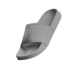
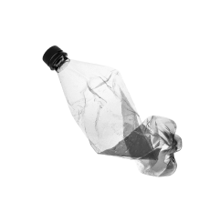
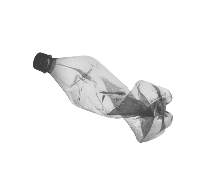
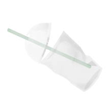
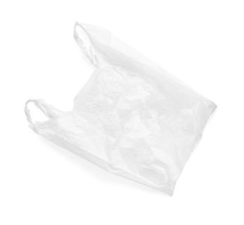

plastic is killing our planet
Plastic disposal has been a controversial topic for the longest time.
Curious to see where plastic goes after use?
It goes down
A lot of trash gets dumped into the ocean

150-200 million tons of single use plastic is produced every year. 50% of that is for single-use purposes
How Much Plastic Pollution is in the Ocean?
Overall, around 8.3 million tons of single-use plastic ends up in our oceans every single year.
There are 5.25 trillion pieces of plastic waste estimated to be in our oceans. 269,000 tons float, 4 billion microfibers per km² dwell below the surface. Source.
There are 5.25 trillion pieces of plastic waste estimated to be in our oceans. 269,000 tons float, 4 billion microfibers per km² dwell below the surface. Source.

Plastic Ingestion is harming marine life
100 million marine animals die each year from plastic waste alone. 100,000 marine animals die from getting
entangled in plastic yearly – this is just the creatures we find! 12-14,000 tons of plastic are ingested by
North Pacific fish yearly.
A recent study found that a quarter of fish at markets in California contained plastic in their guts, mostly in the form of plastic microfibers.
A recent study found that a quarter of fish at markets in California contained plastic in their guts, mostly in the form of plastic microfibers.
Plastic takes decades to decompose
Plastics usually starts to breakdown from 20 to 500 years depending on its structure and the plastic used. The
speed of how plastic breaks depends on its exposure to sunlight.








